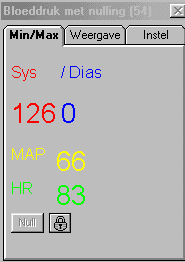
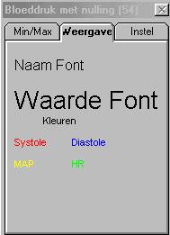
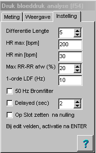
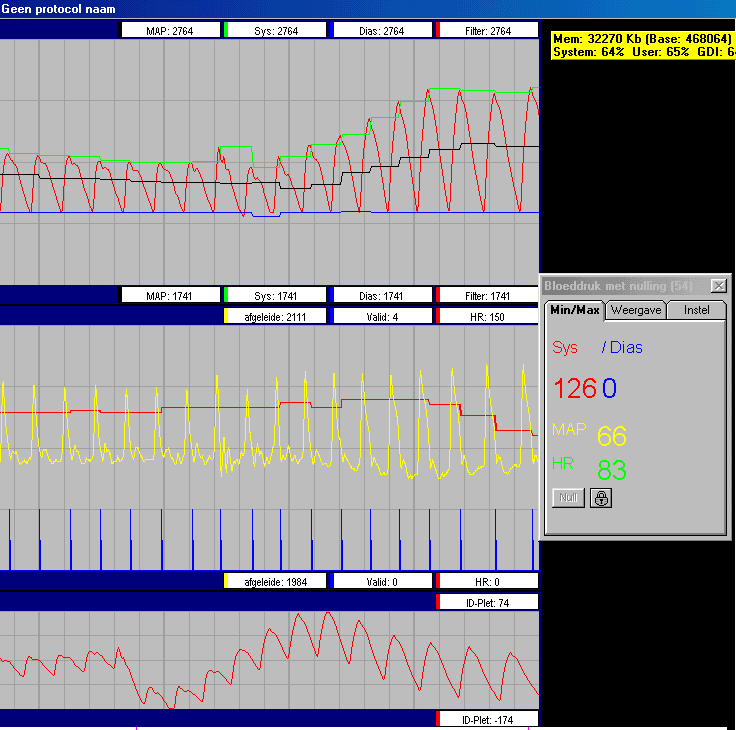
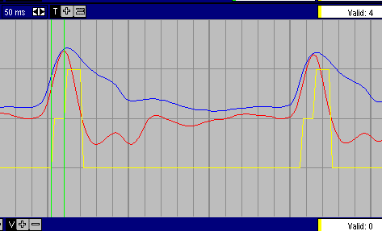

(FF2) Bloeddruk numeriek display and nulling (f54)
Historie
20-10-2004, V11.4 default Laagdoorlaat filter op 10 Hz gezet (was 1 Hz)
Deze functie analyseert de bloeddruk-golf (of soortgelijke signalen), en geeft de resultaten zowel numeriek weer alsook in de vorm van uitgangssignalen. Tevens is (tijdens opname) een nulknop beschikbaar voor het nullen van de transducer.
Beschikbare uitgangssignalen zijn: Systole druk, Diastolische druk, MAP, HR, RR.
Daarnaast is de afgeleide beschikbaar, het gefilterde ingangssignaal en een valid signaal.
Voor een goede werking van het algoritme, moet het signaal een bloeddruk-achtige vorm hebben. De belangrijkste kenmerken, repeterend signaal met een frequentie van ongeveer 1 Hz, steile upstroke en een relatief langzame downstroke (eventuele met notches).
|
 |
Signaal calibratie wordt automatisch uit de signaal tabel afgeleid. Kleuren en fonts van de variabelen zijn vrij instelbaar via het tabblad "Weergave". Het venster is vrij schaalbaar en positioneerbaar. Door op het slotje te klikken, kan de Null-knop al dan niet worden enabled. Afhankelijk van de instelling, wordt na het indrukken van een Null-knop, de betreffende Null_knop al dan niet gedisabled. In de weergave is het null-knopje niet aanwezig. |
|
Door op "Naam Font" of "Waarde Font" te klikken, kunnen de fonts van respectievelijk de signaalnaam c.q. de waarde worden ingesteld (behalve de kleur). Door op Systole ... HR te klikken kan de kleur van een signaal worden ingesteld. |
 |
|
 |
Differentie lengte, het aantal samples voor de bepaling van de afgeleide. Deze wordt zowel gebruikt in het detectie algoritme als voor het uitgangssignaal "afgeleide". HeartRate Max en HeartRate Min, geven een extra controle op de gemeten HeartRate. 50 Hz bromfilter, filtert zowel brom als frequenties boven de 50 Hz. Delayed is vervallen. Als "Op Slot zetten na nulling" is aangekruist, wordt een signaal geblokkeerd voor nulling, zodra eenmaal een nulling is uitgevoerd. |

Bovenstaande afbeelding betreft een oor-plethysmogram, vandaar dat gekozen is voor een baseline (delayed) analyse.
In het onderste venster is het ruwe plethysmogram weergegeven.
De baseline correctie is vervallen en daarmee is het bovenste venster niet meer van toepassing.
In het middelste venster zijn hr, afgeleide en valid signaal te zien.
In het numerieke venster zijn de actuele waarden van diastole, systole, map en hr te zien.
Indien aangekruist, wordt het signaal eerst gefilterd (50 Hz notch + hogere frequenties verwijderen).
Hierna wordt de afgeleide bepaald middels de average-sloop methode. De lengte van de afgeleide bepaling kan worden ingesteld. De optimale instelling hangt sterk af van de aanwezige storingen in het signaal en de gebruikte sample-frequentie. Voor een sample-frequentie van 100 Hz, kan een richtgetal van 10 voor de afgeleide-lengte worden aangehouden.

Middels een toestandsmachine wordt nu getracht de begin systolische momenten te bepalen. Dit zijn de meest karakteristieke momenten met hoge afgeleiden.
In bovenstaande figuur is de detectie weergegeven (blauw = een plethysmograaf signaal, rood = de afgeleide van dit plethysmograaf signaal, geel = de toestandsteller, deze loopt vanaf 0, de vertikale groene lijnen zijn markers.